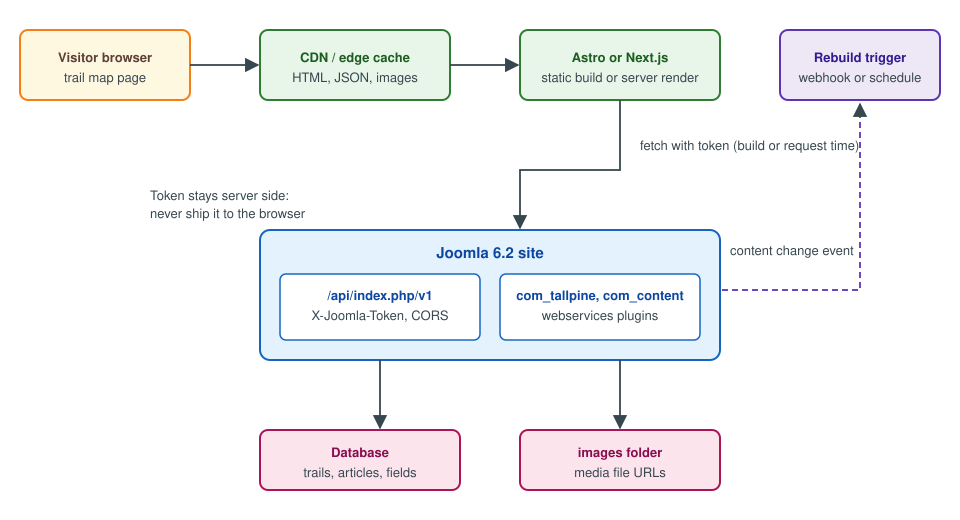

Headless Joomla
|
This content was generated with the assistance of AI and should be verified against the official documentation before being relied on in production. |
"Headless" means that Joomla keeps the editorial side (articles, categories, custom fields, users, access levels, the media library, workflows) and stops rendering the public pages. A separate front end, built with a framework such as Astro or Next.js, reads the content through the Web Services API and produces the HTML. Joomla has had that API since 4.0, so this is a pattern built from parts that ship in core, not a separate product or mode. This page shows how to assemble it for the trail map of the Tallpine Hiking Club: how the pieces fit, how to authenticate without leaking a token, how to fetch at build time and at request time, how to keep the cache fresh, how to configure CORS, how image and media URLs look, how to preview unpublished trail reports and what the project lists as plans.
It was written against Joomla 6.2 (current, PHP 8.3 or newer) and checked against the Joomla Developer Manual, the
6.2.0 source tree and the project roadmap on 2026-10-30. Joomla 5.4 receives security fixes only; Joomla 4.x and 3.x are
end of life. The examples use the club’s package pkg_tallpine and component com_tallpine; the webservices plugin
that exposes the trail entity is built in
Extending the Web Services API, and the endpoints, token set-up
and JSON:API format are explained in The Web Services API. The front-end
frameworks are not re-taught here; see Next.js and React.
When headless is, and is not, a good idea
A headless front end is worth its cost when one of the following is true:
-
the public site is a highly interactive application (a trail map with filters, a members' conditions dashboard) that would be awkward as server-side PHP templates
-
the same content must feed several channels (the website, a mobile app, a screen at the club house)
-
the front-end team works in JavaScript or TypeScript and wants its own build, test and deployment pipeline
-
the public pages are static and can be served from a CDN, while Joomla sits behind a firewall
It is not worth it when the site is mostly articles and menus. You lose things that Joomla does for you in a
server-rendered site: menu items and SEF URLs (the router in
SEO, SEF URLs, redirects and Schema.org), template
overrides, module positions, the Smart Search front end, the content plugins that rewrite {loadposition}-style tags,
the language switcher and the cache of the System - Page Cache plugin. The front end has to reimplement the parts it
needs. A good compromise is a hybrid: keep Joomla rendering the editorial pages and use the API only for the one
interactive page, as the trail map does.
Architecture

The Joomla site stays a normal installation with an administrator, a database and an images folder. The API
application lives at /api/index.php/v1/... (see
Installation and the public folder for how the entry points
are laid out). The front end is a separate project on a separate host or a separate origin. It talks to Joomla from the
server, either when the site is built or when a page is rendered, and the browser only ever talks to the front end and
the CDN. That arrangement answers most of the hard questions at once:
-
the API token never reaches the browser
-
the browser needs no CORS configuration, because it does not call Joomla
-
Joomla traffic is the number of builds or cache misses, not the number of visitors
-
the Joomla server can restrict the API path to the addresses of the build and render hosts
A browser-side call to the API is possible too, and the CORS section below shows how to allow it, but it means the credential has to be one that is safe to publish, which Joomla’s token model does not provide (see the next section).
Authentication: tokens belong on the server
The Web Services API authenticates with an API token sent in the X-Joomla-Token header; the token belongs to a user
who may log in to the API (the core.login.api permission, or a Super User). On a fresh 6.2 installation the
User - Joomla API Token plugin is enabled and the API Authentication - Basic Auth plugin is disabled. Every token is
bound to a user, so it carries all the permissions of that user. The Manual page for the Web Services API uses the
same header and states that the user needs core.login.api and core.login.site unless it is a Super User.
For the trail map, create a dedicated user, for example trailmap-reader, in a custom group whose only rights are
core.login.api plus view access to the Trails category and the Public access level. A token for a Super User
would let anybody who steals it delete the whole site. Then:
-
generate the token on the user’s Joomla API Token tab and copy it once; Joomla stores only the seed and the token is derived from it, so a lost token cannot be shown again and you generate a new one
-
put it in the front end’s environment (a CI secret, the hosting provider’s secret store), never in the repository and never in a variable that the framework exposes to the browser (a
PUBLIC_prefix in Astro,NEXT_PUBLIC_in Next.js) -
rotate it by resetting the user’s token and updating the secret, and treat a leaked token like a leaked password
export JOOMLA_API_URL="https://cms.tallpine.example/api/index.php/v1"
# JOOMLA_API_TOKEN comes from the secret store; CHANGE_ME is only a placeholder
export JOOMLA_API_TOKEN="CHANGE_ME"
curl --silent --show-error \
--header "Accept: application/vnd.api+json" \
--header "X-Joomla-Token: ${JOOMLA_API_TOKEN}" \
"${JOOMLA_API_URL}/content/articles?filter[category]=12&filter[state]=1&page[limit]=20&list[ordering]=modified&list[direction]=DESC"Source: Joomla Manual: Web Services
The list filters (filter[category], filter[state], filter[tag], filter[language], filter[search],
filter[modified_start], filter[modified_end] and others), the page[offset] and page[limit] pagination and
list[ordering]/list[direction] are read by the article controller and the base ApiController in the 6.2 source;
quote the square brackets when you use a shell, or curl will try to expand them. The modification filters make an
incremental sync cheap: a build job can store the time of its last run and ask only for articles modified since then.
The manual page warns against keeping tokens in environment variables on a shared workstation and recommends a secrets
vault; in a CI pipeline the pipeline’s secret store plays that role, and the variable exists only for the duration of
the job.
Anonymous reads are not the default. Core routes require a valid token even for GET. A route registered with
createCRUDRoutes() can set its fourth argument, $publicGets, to true to allow public GET requests, which is
useful for a custom read-only trail endpoint but also means the data is public to anybody who finds the URL, so use it
only for data you would publish on the website anyway. The default state of an unauthenticated request is a 401.
Fetching at build time with Astro
A static trail map is built by fetching everything in the front matter of a page. The build runs on a CI host that has the token, and the result is plain HTML, JSON and images served from the CDN.
// src/lib/joomla.js (Astro 5, Node 22 or later)
const base = import.meta.env.JOOMLA_API_URL;
const token = import.meta.env.JOOMLA_API_TOKEN; // server-only: no PUBLIC_ prefix
export async function joomla(path, params = {}) {
const url = new URL(`${base}/${path}`);
for (const [key, value] of Object.entries(params)) {
url.searchParams.set(key, String(value));
}
const response = await fetch(url, {
headers: {
Accept: 'application/vnd.api+json',
'X-Joomla-Token': token,
},
});
if (!response.ok) {
throw new Error(`Joomla API ${response.status} for ${url.pathname}`);
}
return response.json();
}
export async function allTrails() {
const trails = [];
let offset = 0;
const limit = 50;
for (;;) {
const page = await joomla('tallpine/trails', {
'page[offset]': offset,
'page[limit]': limit,
});
trails.push(...page.data.map((row) => ({ id: row.id, ...row.attributes })));
if (page.data.length < limit) {
return trails;
}
offset += limit;
}
}---
// src/pages/trails/index.astro
import { allTrails } from '../../lib/joomla.js';
const trails = await allTrails();
---
<ul>
{trails.map((trail) => (
<li><a href={`/trails/${trail.alias}/`}>{trail.title}</a> - {trail.distance_km} km</li>
))}
</ul>Source: Joomla Manual: Web Services
The route tallpine/trails is the one the plg_webservices_tallpine plugin registers for the trail entity; the
JSON:API envelope puts each record under data, with the columns under attributes. The loop above is deliberate: a
list request returns one page, so a front end that asks only once silently shows the first page of trails (the default
page size comes from the global list limit). Follow links.next if you prefer to take the URL the server gives you. A
static build must also decide when it is out of date, which is the subject of the next section.
Server rendering and caching with Next.js
When the data changes too often for rebuilds, render on the server and cache for a short time. In the Next.js App
Router a fetch call can carry a lifetime and tags, and a route handler can invalidate by tag. The models (previous
caching model and Cache Components) are explained in Next.js caching and
Incremental Static Regeneration; the pattern used here is the
default one.
// lib/joomla.js (server-only module)
import 'server-only';
export async function getTrails() {
const response = await fetch(`${process.env.JOOMLA_API_URL}/tallpine/trails?page[limit]=100`, {
headers: {
Accept: 'application/vnd.api+json',
'X-Joomla-Token': process.env.JOOMLA_API_TOKEN,
},
next: { revalidate: 300, tags: ['trails'] },
});
if (!response.ok) {
throw new Error(`Joomla API ${response.status}`);
}
const body = await response.json();
return body.data.map((row) => ({ id: row.id, ...row.attributes }));
}// app/api/revalidate/route.js - called by Joomla after a trail is saved
import { revalidateTag } from 'next/cache';
import { timingSafeEqual } from 'node:crypto';
export async function POST(request) {
const expected = Buffer.from(process.env.REVALIDATE_SECRET ?? '');
const given = Buffer.from(request.headers.get('x-revalidate-secret') ?? '');
if (expected.length === 0 || expected.length !== given.length || !timingSafeEqual(expected, given)) {
return new Response('Forbidden', { status: 403 });
}
revalidateTag('trails', 'max');
return Response.json({ revalidated: true });
}The route handler pattern, including how to protect it, is described in
Route handlers and backend for frontend. Two properties
of this design matter. First, revalidate: 300 bounds how stale a page can be even when no webhook arrives, so a lost
notification is a five-minute problem, not a permanent one. Second, the revalidation endpoint is itself an attack
surface: it must compare a secret in constant time and must not be reachable without it.
Invalidation: telling the front end that content changed
Joomla has its own caches (the page cache, the conservative or progressive cache of Caching and performance), and none of them knows about your front end. Three strategies are in use, from simplest to most precise:
-
Time based. Short lifetimes (
revalidate, a CDNs-maxage) and no coupling. Good enough for a trail list that changes a few times a day. -
Scheduled rebuild. A CI job runs every few minutes or nightly, uses
filter[modified_start]to detect changes and rebuilds only when there are some. A Joomla scheduled task (Scheduled task plugins) can trigger it too. -
Event based. A Joomla plugin posts a webhook when a trail is saved, published or deleted, and the front end invalidates the affected tag or path.
The event-based variant uses the content events. The onContentAfterSave event carries a concrete event class
(Joomla\CMS\Event\Model\AfterSaveEvent) with getContext(), getItem() and getIsNew(); the same event fires when
an article or a trail is saved through the API, so the notification works whichever way the content changed. A task
that has to survive an unreachable front end should be queued rather than done inline (a scheduled task that retries is
a good fit), because an exception in an event listener must not block the save.
<?php
namespace Tallpine\Plugin\Content\TallpineConditions\Extension;
use Joomla\CMS\Event\Model\AfterSaveEvent;
use Joomla\CMS\Http\HttpFactory;
use Joomla\CMS\Plugin\CMSPlugin;
use Joomla\Event\SubscriberInterface;
\defined('_JEXEC') or die;
final class TallpineConditions extends CMSPlugin implements SubscriberInterface
{
public static function getSubscribedEvents(): array
{
return ['onContentAfterSave' => 'notifyFrontEnd'];
}
public function notifyFrontEnd(AfterSaveEvent $event): void
{
if ($event->getContext() !== 'com_tallpine.trail') {
return;
}
$hook = (string) $this->params->get('revalidate_url', '');
$secret = (string) getenv('TALLPINE_REVALIDATE_SECRET');
if ($hook === '' || $secret === '') {
return;
}
try {
HttpFactory::getHttp()->post(
$hook,
'{}',
['Content-Type' => 'application/json', 'X-Revalidate-Secret' => $secret],
5
);
} catch (\Throwable $e) {
// Never block saving a trail because the front end is down; the revalidate lifetime covers it.
$this->getApplication()->enqueueMessage('Front end not notified: ' . $e->getMessage(), 'warning');
}
}
}Source: Joomla Manual: How plugins work
The class would be one more subscriber of the content plugin built in
Plugin development and events; the context string
com_tallpine.trail is the one the club’s component uses for its form. Reading the secret with getenv() follows the
rule for the whole sub-section: a webhook secret is configuration, not content, and it does not belong in a plugin
parameter that is stored in the database and exported with backups. Call the front end over HTTPS only.
The CDN also needs attention. The core API application sends no cache headers of its own, so an API response is not
cacheable by default, and the CDN in front of the front end caches the front end’s responses, not Joomla’s. If you
expose the API through a CDN anyway, do not cache responses that depend on X-Joomla-Token, because one user’s view
would be served to another.
CORS: only when the browser calls the API
If the front end calls the API from the browser (a client-side widget, a single-page application), the browser enforces
the same-origin policy and Joomla has to answer the preflight request. Joomla’s API application implements this itself.
In System, Global Configuration, Web Services the switch Enable CORS turns it on, with three further fields:
Access-Control-Allow-Origin, Access-Control-Allow-Headers (default Content-Type,X-Joomla-Token,Authorization) and
Access-Control-Allow-Methods (default: the methods of the matched route). These are the cors, cors_allow_origin,
cors_allow_headers and cors_allow_methods keys of configuration.php. The setting exists since Joomla 4.0.
The behaviour changed in Joomla 5.4.8 and 6.1.3 (and so applies to every 6.2 release). Earlier releases accept a single
origin only, and whenever the request carries an Origin header they echo it back with
Access-Control-Allow-Credentials: true, whatever the configured value. Since 5.4.8 and 6.1.3 the API application
accepts a comma-separated list of exact origins, echoes the request’s origin only when it is in the list (and adds
Vary: Origin), answers 403 to a preflight from an unlisted origin, and sends Access-Control-Allow-Credentials: true
only for a listed origin. With the default asterisk it sends a wildcard origin and never credentials. The same releases
added Authorization to the default allowed headers, which was Content-Type,X-Joomla-Token before. In every version,
prefer an explicit list of your front-end origins over the wildcard.
// configuration.php, written by Global Configuration (5.4.8, 6.1.3 and later: several exact origins)
public $cors = true;
public $cors_allow_origin = 'https://trails.tallpine.example,https://staging.tallpine.example';
public $cors_allow_headers = 'Content-Type,X-Joomla-Token,Authorization';
public $cors_allow_methods = 'GET,OPTIONS';Note that the HTTP Headers system plugin (the one for HSTS, CSP and X-Frame-Options) has no CORS fields; it is not
where cross-origin access to the API is configured. A reverse proxy can add CORS headers too, but do it in one place
only: duplicated Access-Control-Allow-Origin headers are rejected by browsers. The protocol itself, preflight
requests and common errors are explained in CORS. Remember that CORS protects a browser user, not
the API: a token is still required, and a token cannot be hidden in browser code. A public widget that must call
Joomla from the browser should call a small server-side proxy (a Next.js route handler is enough) that holds the token
and exposes only the required, filtered data.
Images and media URLs
Content records the location of an image, not the image itself. In the article images field the intro and full-text
images are stored as paths relative to the site root, such as images/trails/ridge.jpg, usually followed by a fragment
that Media Manager adds, for example #joomlaImage://local-images/trails/ridge.jpg?width=1600&height=900. The fragment
records the adapter and the pixel size and is what lets Joomla output width and height attributes. The API returns
these fields as stored. A front end therefore has to:
-
strip the
#joomlaImage://...fragment (the PHP helperMediaHelper::getCleanMediaFieldValue()does the same on the Joomla side), keeping the size from it if it wants to avoid layout shift -
turn the relative path into an absolute URL on the public host of Joomla, for example
https://cms.tallpine.example/images/trails/ridge.jpg -
decide whether to serve images from Joomla at all; if the CMS host is private, copy the files into the build (or an object store behind the CDN) and rewrite the URLs

The media endpoints of com_media (/api/index.php/v1/media/files and /media/adapters) list and manage files; their
JSON:API view includes path, thumb_path, url, width, height, mime_type and, when asked for it, content
(the file content, base64 encoded). The url=false query parameter suppresses the URL, and the path parameter selects
a folder in the form local-images:/trails. The adapter name in the path (local-images is the default for the
images folder) matters, because custom adapters supplied by plugins have other names. The gpx-file custom field of
the Tallpine trails is a media field; its value is a path of the same shape, and the front end resolves it the same
way. For the media library itself, see Media Manager.
// lib/media.js
const CMS_ORIGIN = process.env.JOOMLA_PUBLIC_ORIGIN; // https://cms.tallpine.example
export function mediaUrl(stored) {
if (!stored) {
return null;
}
const [path] = stored.split('#');
return new URL(path.replace(/^\//, ''), `${CMS_ORIGIN}/`).toString();
}
export function mediaSize(stored) {
const query = (stored ?? '').split('?')[1];
if (!query) {
return null;
}
const params = new URLSearchParams(query);
return { width: Number(params.get('width')), height: Number(params.get('height')) };
}Source: Joomla Manual: Web Services
Two pitfalls: image URLs coming from the editor body (introtext, fulltext) are HTML strings that may contain
relative src attributes, so rewrite those too; and a hotlinked image on the CMS host puts the CMS in the critical path
of every page view, which defeats part of the point of a static front end.
Previews of unpublished content
Editors want to see a draft trail report before it goes live. Joomla’s own site shows an editor an unpublished item because the editor is logged in; a headless front end has no such session. Approaches that work:
-
a preview route in the front end, protected by a secret and used only by editors, that fetches with
filter[state]=0(unpublished) using a token of a user who may edit the content, and renders the result without caching (Next.js Draft Mode, an Astro server endpoint withprerender = false) -
a link in the Joomla administrator (a button added by a plugin, or a menu item) that opens the preview route with the article ID and the secret, so editors never type it
-
for workflows, restrict the preview token’s user to the stage that needs review, so published content cannot be altered by it
The published reader token should not see drafts: a separate token with elevated access is the safe design, and it
must exist only in the preview environment. The state filter takes the numeric publishing states (1 published,
0 unpublished, 2 archived, -2 trashed). Remember that publish_up and publish_down are returned as dates; filter on
them in the front end if the item can be published in the future.
What the roadmap lists as plans
Two ideas often appear in discussions of headless Joomla. Neither exists in Joomla 6.2.
-
OAuth. The API supports API tokens (and a Basic Auth plugin that is off by default); there is no OAuth 2.0 authorisation server or OpenID Connect provider in core, so no client credentials flow, short-lived access tokens or scoped permissions. It is discussed as a plan for later releases, with no release or date committed. Until then, the mitigations are the ones above: a minimal-permission user, server-side storage and rotation. For the protocol itself, see OAuth.
-
A headless-only mode. A site that disables the public templates and serves only the administrator and API, so that nothing but the API is exposed, is likewise a plan. Today you approximate it by routing the public host to the front end, keeping the CMS on a private or restricted host, and blocking site paths in the web server.
The roadmap page on developer.joomla.org (checked 2026-10-30) lists Joomla 6.2.0 as released on 13 October 2026 and 6.3 as planned for 13 April 2027, without a shipped OAuth or headless-only feature; the same page mentions AI work (for instance MCP servers with accessibility in mind) as work in progress or under investigation. Treat any statement of dates for these items as unconfirmed until the roadmap names a release.
Common errors and pitfalls
-
401or403from a front end that worked locally. The token belongs to a user withoutcore.login.api, to a disabled user, or to a user whose group cannot view the content. Test withcurlfirst. -
Only the first page of results. Pagination was not followed.
-
The token ends up in the browser bundle. A
PUBLIC_orNEXT_PUBLIC_environment variable, or a client component that calls the API. Move the call to server code. -
CORS error with a correct token. The browser sends a preflight
OPTIONSthat carries no token. CORS must be enabled in Global Configuration, the front end’s origin listed, andX-Joomla-Tokenallowed in the headers. -
Doubled
Access-Control-Allow-Origin. Both Joomla and the proxy add it; keep one. -
Wrong PATCH body for articles. Split the body into
introtextandfulltextor sendintrotext, as the Manual warns. -
Dates in the wrong zone. Convert dates in the front end to the zone you display.
-
Language and access levels ignored. The API returns the language and access of each record; filter and enforce them in the front end (
filter[language]), because the site’s language filter plugin is not involved. -
Old advice. Older books and tutorials, including Developing Extensions for Joomla! 5 (2023) in its API chapters, describe a non-namespaced
CMSPluginwithonBeforeApiRoute(&$router); current code usesSubscriberInterfaceandBeforeApiRouteEvent, and Joomla 4-era posts treat a Super User token as the normal choice, which this page advises against.